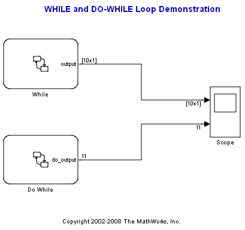
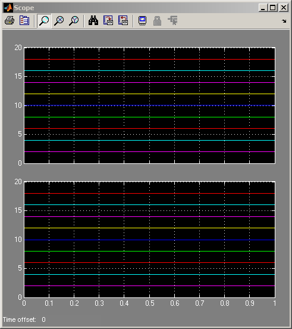

WHILE Loops
With the use of flow charts, Stateflow® allows you to create C-Code or M-Code statements such as the WHILE loop. This particular demo illustrates how a WHILE loop and a DO-WHILE can be implemented in Stateflow in order to create a variable array. The equivalent statements in C-Code are as follows:
WHILE: while(condition < 20) { while_output[i] = condition; i++; condition += 2; }
DO - WHILE: do { do_output[i] = condition; condition += 2; i++; } while(condition < 20);
The variable WHILE_OUTPUT is an array with 10 elements and the variable DO_OUTPUT is 11 elements. Notice that in the scope block, the DO-WHILE loop has an extra value of 20 which is what is expected.
You can use such loops to update or buffer a multi-dimensional variable from within Stateflow.
 